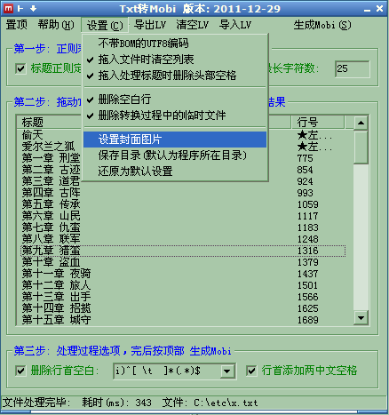

|
名称: AnsiTxt2Mobi 功能: 将文本文件转换为Mobi电子书(Kindel电子书) 作者: 爱尔兰之狐(linpinger) 邮箱: linpinger@gmail.com 主页: http://linpinger.github.io?s=Atc_Txt2Mobi 缘起: 看中文的文本文件，容易出现乱码，可用下面的程序转换为kindle 支持的 Mobi 格式 原理: TXT -> UTF-8 HTML/NCX/OPF ->(kindlegen) Mobi 下载:
txt生成: mobi,epub,pdf,umd的综合转换工具开了一个新名称Txt2eBook
使用正则表达式来定位标题，可生成目录，及NCX目录(左右键在章节跳转) 新版Txt转Mobi格式，支持生成目录 这次使用正则表达式来定位标题行，程序内置了两个正则，对于 第xxx章 第xxx节这样的可以处理 如果用户能懂一些简单的正则表达式那就更好，能自己修改了，有好的正则可以留在博客中，然后会考虑加入到程序中 截图:  最简单的使用方法: 将文本文件拖动到列表框(窗口中最大的那个框)中, 按 顶部右边的 生成Mobi 菜单，然后就会生成mobi文件(有没有目录得看你的Txt的标题是不是 第xxx 章 这样的类型) 第一步: 设置好第一步框中的设置，左侧的正则表达式的功能是定位标题行，可以自定义，默认的是 第xxxx章 的样式，如果是 xxxx第xxx节xxxx 这样的，按下拉框，选择第二个正则表达式 正则表达式可参考链接: http://cn.autohotkey.com/docs/misc/RegEx-QuickRef.htm 右侧的选项的功能是限制标题行的长度，默认25个字符(1个中文字或1个英文字符算一个字符) ，这是针对某些在正文中被正则匹配到 第………章 的行 其实该选项可不选，使用者可在自动处理完目录后，使用 Ctrl + Del 键来删除多出的标题行 第二步: 将txt文件拖动到列表框(窗口中最大的那个框)中,程序会按照上步的正则表达式和选项来检测标题行 等生成目录完毕后(下面状态栏会提示 )，可以对第一行的书的标题进行修改(选中，按F2键), 还可以按 Ctrl + Del 键来删除选中的标题行，该列表直接影响生成的目录内容，具体热键操作，在帮助菜单中有，可以查看，菜单的导出LV数据，导入LV数据是为了方便修改而设置的，导出LV数据就是将列表中的数据导出为FoxListView.txt, 分隔符为>, 可以使用文本编辑器编辑后保存，使用导入LV数据导入(先要Ctrl+A, Ctrl+Del将旧列表删除，然后导入) 第三步: 该选项影响从Txt文件到HTm文件中的过程，左侧正则表达式的目的是为了删除行首空白，Tab,中文空白字符串，而保留正文 右侧的选项就是在行首加入两个中文空格 ，这样生成的mobi比较美观(每行两个字的缩进) 第四步: 按 顶部右边的 生成Mobi 菜单，然后就会生成mobi文件 更新日志:
|